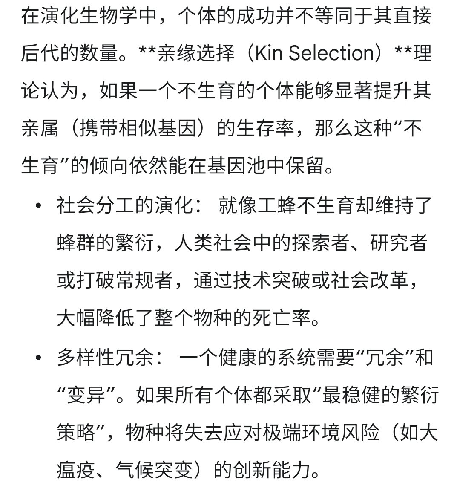
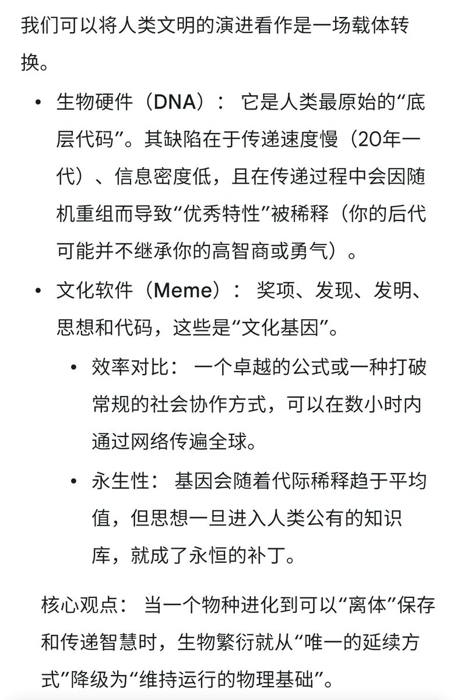
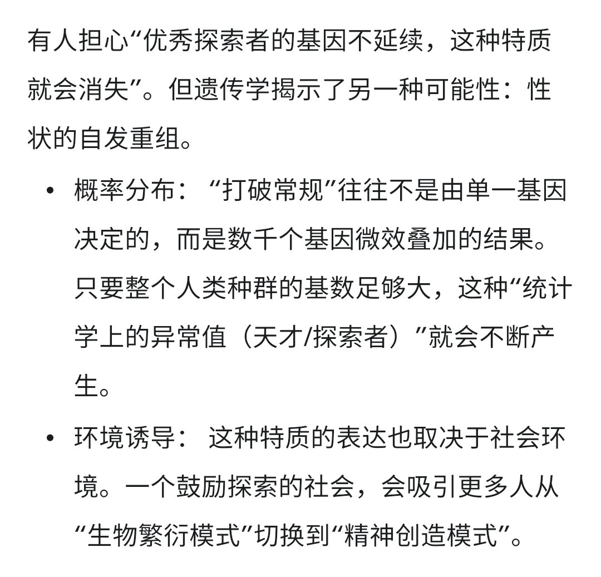

時璃風医詩🌈🏳️🌈
@hagishigure
@StarNekOvO 愛因斯坦的後代也沒提出四大力大一統理論。很難明白那些説基因的人是不是沒學過基因生物學。



猫奶牛
@StarNekOvO
猫挠头了，原来一些人类是那样想的，没道理，还是觉得 llm 更有道理一点
（以下均为 AI 生成如有不适请 Mute）
- 生命力的定义： 信息的抗熵增传递
- 媒介的进化： 2026 年的今天，数字载体和产品的传递效率已在数量级上碾压了生物化学载体
- https://t.co/XyWy7ynr0w https://t.co/KouWn3F8TA